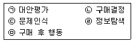
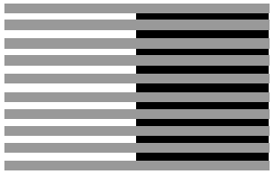
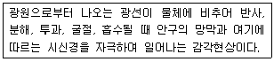
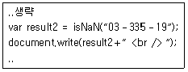
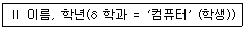

멀티미디어콘텐츠제작전문가 (2017-08-26 기출문제)
1과목: 멀티미디어개론
1. 스푸핑(Spoofing)의 종류가 아닌 것은?
- RPC Spoofing
- IP Spoofing
- ARP Spoofing
- DNS Spoofing
(정답률: 61%)

2. 데이터링크 계층에서 수행하는 기능이 아닌 것은?
- 프레임구성·
- 오류제어
- 흐름제어
- 연결제어
(정답률: 42%)
3. 운영체제에서 스케줄링의 목적으로 틀린 것은?
- 응답시간을 빠르게 하기 위해
- 운영체제의 오버헤드를 최대화하기 위해
- 단위 시간 당 처리량을 최대화하기 위해
- 모든 작업들에 공평성을 유지하기 위해
(정답률: 75%)
4. 저전력 단거리 무선망 IPv6(6LoWPAN)을 기반으로 한 도어록, 전구, 온도조절기, 세탁기 등 스마트 홈 기기간의 사물인터넷을 제공하는 무선 프로토콜은?
- 엠엔지 프로토콜
- 스레드 프로토콜
- 에이디에스－비 프로토콜
- 래드섹 프로토콜
(정답률: 70%)
5. 영상의 명암 값 프로필을 보여주기 위해 사용되는 방식은?
- 디더링
- 앤티앨리어싱
- 히스토그램
- 블러링
(정답률: 79%)
6. 영상압축의 표준화 방식은?
- Dolby AC－3
- H.264
- MPEG1 audio/layer3
- MUSICAM
(정답률: 91%)
7. 3－Way Handshake를 수행하여 syn, syn＋ack, ack 신호를 통한 정확성 있는 통신에 이용되는 프로토콜은?
- UDP·
- TCP
- IP
- HTTP
(정답률: 87%)
8. JPEG의 압축효율 개선과 블록화 문제를 해결하고 웨이블릿 변환 및 적응적 산술코딩을 적용한 정지영상 압축 표준은?
- JPEG1000·
- MPEG
- H.264
- JPEG2000
(정답률: 78%)
9. 지상파(Eureka－147) DMB의 채널 대역폭은?
- 6.53 [MHz]·
- 140 [MHz]
- 2.04 [MHz]
- 1.536 [MHz]
(정답률: 60%)
10. 기기간의 데이터 전송을 위한 USB 케이블 단자의 위·아래가 동일한 24핀 형식의 USB는?
- Z형 USB·
- S형 USB
- C형 USB
- I형 USB
(정답률: 77%)
11. 네트워크를 통한 데이터 전송 시 데이터의 전송경로를 파악하기 위해 사용하는 유닉스계렬 운영체제의 traceroute, Windows 운영체제의 tracert 등은 공통적으로 어느 프로토콜을 기반하여 동작하는가?
- HTTP·
- ICMP
- IMAP
- X25
(정답률: 55%)
12. 운영체제에서 커널의 역할이 아닌 것은?
- 응용프로그램 구동 환경 제공
- 주변 장치 상태 점검
- 다른 운영체제를 사용할 수 있는 가상화 시스템 제공
- 프로세스 실행의 우선순위 결정
(정답률: 58%)
13. 동일한 메시지라도 암호화가 이루어질 때마다 암호문이 변경되고 암호문의 길이가 2배로 늘어나는 특징을 지닌 암호 시스템은?
- ElGamal·
- RSA
- SSL
- DES
(정답률: 52%)
14. 블루레이(Blue－ray)에 대한 설명으로 틀린 것은?
- DVD보다 많은 용량의 데이터를 저장
- 비디오 데이터 포맷은 MPEG－2를 지원
- 오디오는 5.1채널의 AC－3을 지원
- 120nm 파장의 적색 레이저를 사용하여 데이터 기록
(정답률: 80%)
15. 웹 보안 프로토콜 중 RSA 암호화 기술을 기반으로 전송되는 정보를 보호하여 인터넷에서 안전하게 상거래를 할 수 있도록 지원해주는 지불(Payment) 프로토콜은?
- SET·
- FTP
- SEA
- RS530
(정답률: 49%)
16. IP주소가 190.0.46.201의 기본 마스크는?
- 255.0.0.0·
- 255.255.0.0
- 255.255.255.0
- 255.255.255.255
(정답률: 63%)
17. 음향 신호를 전송하거나 녹음할 때 최강음과 최약음의 차이를 [dB]로 나타낸 것은?
- 푸리에 변환·
- 다이나믹 레인지
- 콘볼루션
- 정재파비
(정답률: 82%)
18. 모바일 TV 미디어와 관련이 없는 것은?
- MMS·
- DMB
- DVB－H
- Media FLO
(정답률: 83%)
19. DNS 스푸핑을 이용하여 공격대상의 신용정보 및 금융정보를 획득하는 사회공학적 해킹 방법은?
- 프레임 어택·
- 디도스
- 파밍
- 백도어
(정답률: 77%)
20. 음성의 디지털 부호화 기술 중에 파형 부호화 방식을 적용한 기술은?
- 보코더
- DPCM
- 선형 예측 부호화
- 포만트 보코더
(정답률: 52%)
2과목: 멀티미디어기획및디자인
21. 다음 중 디지털화 된 이미지의 기본적 색채 특징이 아닌것은?
- 해상도(resolution)
- 트루컬러(true color)
- 비트깊이(bit depth)
- 컬러모델(color model)
(정답률: 60%)
22. 다음은 소비자 의사결정의 각 단계별 항목이다. 순서대로 바르게 나열된 것은?

- ㉢→㉠→㉣→㉡→㉤
- ㉣→㉠→㉢→㉡→㉤
- ㉢→㉣→㉠→㉡→㉤
- ㉣→㉢→㉠→㉡→㉤
(정답률: 82%)
23. CIE L＊a＊b＊ 표색계에 대한 설명으로 거리가 먼 것은?
- ＋a＊는 red의 방향이다.
- －a＊는 red - green 축에 관계된다.
- L＊ = 50 은 gray 이다.
- ＋b＊는 blue의 방향이다.
(정답률: 61%)
24. 모션블러(Motion－Blur)에 대한 설명으로 틀린 것은?
- 카메라 앞에서 너무 빨리 움직이는 물체가 흐리게 보이는 현상이다.
- 이 현상은 물체의 속도가 빨라지고 대상물이 카메라에 가까워짐에 따라 감소한다.
- 컴퓨터 그래픽에서 고속으로 운동하고 있는 물체를 표현하는 방법 중 하나이다.
- 이 현상은 컴퓨터 애니메이션에서는 자동적으로 일어나지 않으며 제작자가 추가해야한다.
(정답률: 79%)
25. 기획서 작성에 대한 설명으로 틀린 것은?
- 표지는 기획서를 읽는 사람이 기획서와 처음 접하는 페이지로서 컬러와 디자인 감각을 적극 도입한다.
- 플로차트(Flowchart)는 기획된 내용들을 각 모듈과 모듈별, 개념과 개념의 상관관계, 내용구성의 로직을 한눈에 볼 수 있도록 작성한다.
- 안건에 대한 개선이나 문제점을 해결하기 위해 방향성을 제시하면서 개선안에 대한 구체적인 방안을 모색하여 방법을 제시한다.
- 스토리보드는 전체구성도로서 기입에는 코드명 형식을 사용한다.
(정답률: 69%)
26. 디자인의 시각 요소에 속하지 않는 것은?
- 모양(Shape)
- 크기(Size)
- 비례(Proportion)
- 배경(Background)
(정답률: 67%)
27. 디자인을 위한 아이디어 발상법과 그 내용이 잘못된 것은?
- 브레인스토밍을 거침없이 생각하여 말을 하도록 하는 방법으로 폭넓은 사고를 통하여 우수한 아이디어를 얻도록 하는 것이다.
- 고든법이란 가장 구체적으로 문제를 설명하여 주고 자유로운 토론을 유도하는 방법이다.
- 시네틱스법(Synetics)이란 서로 관련이 없어 보이는 것들을 조합하여 2개 이상의 것을 결합하거나 합성 하는 방법으로 Idea를 발상하는 방법이다.
- KJ법이란 가설발견의 방법으로 사실이나 정보를 듣고 직감적으로 관계가 있다고 느끼는 것을 말하는 것이다.
(정답률: 72%)
28. 다음 중 콘텐츠 제작과정이 아닌 것은?
- 프로덕션(Production)
- 프리 프로덕션(Pre－Production)
- 포스트 프로덕션(Post－Production)
- 애프터 프로덕션(After－Production)
(정답률: 78%)
29. 편집디자인에 있어서의 레이아웃(Layout)이란?
- 의사 전달 목적과 관련된 사진 내용의 이해
- 시각적 구성요소들을 조합하여 상호간 기능적으로 배치, 배열하는 작업
- 내용을 전달하는 그림을 완성하는 일
- 편집의 처리규정과 운영방법을 계획하는 것
(정답률: 88%)
30. 다음 그림이 뜻하는 효과는 무엇인가?

- 에브니 효과
- 헬름홀츠－콜라우슈 효과
- 베졸드 효과
- 리프만 효과
(정답률: 81%)
31. 먼셀색체계의 색상환에서 서로 마주보고 있는 색으로 배색했을 때 어떤 대비 효과를 볼 수 있는가?
- 명도대비·
- 채도대비
- 보색대비
- 색상대비
(정답률: 82%)
32. 디지털 색채시스템 중 HSB시스템에 대한 설명으로 거리가 먼 것은?
- 먼셀의 색채개념인 색상, 명도, 채도를 중심으로 선택하도록 되어 있다.
- 프로그램 상에서는 H모드, S모드, B모드로 볼 수 있다.
- H모드는 색상을 선택하는 방법이다.
- B모드는 채도 즉, 색채의 포화도를 선택하는 방법이다.
(정답률: 69%)
33. 오스트발트 표색계에 대한 설명으로 틀린 것은?
- 색입체는 복원추체 모양이며 같은 기호의 색은 명도, 채도의 감각이 같다.
- 색입체를 수평으로 절단하면 흰색, 검정색, 순색량이 같은 등가색환 계열이 된다.
- 헤링의 4원색설을 기본으로 하여 색상분할을 원주의 4등분이 서로 보색이 되도록 했다.
- 색량의 많고 적음에 의해 만들어진 것이며 색은 흰색, 검정색, 순색의 혼합으로 이루어진다.
(정답률: 50%)
34. 타이포그래피(Typography)에 관한 내용으로 거리가 가장 먼 것은?
- 타입(Type)과 그래피(Graphy)의 합성어이다.
- 디자인 된 문자를 활용한 문자 표현이나 작품을 레터링(Lettering)이라고 한다.
- 타입(Type)은 문자 또는 활자의 의미를 갖는다.
- 정보를 시각화하여 전달하는 방법 중에 가장 과학적이고 객관적인 방법으로 많은 메시지를 전달할 수 있는 새로운 디자인 형태이다.
(정답률: 71%)
35. 정지된 비트맵 형태의 로고나 심벌을 웹상의 콘텐츠로 사용할 때 가장 적합한 파일 형식은?
- GIF·
- BMP
- SWF
- EPS
(정답률: 64%)
36. 화면의 레이아웃 디자인 시 그리드(Grid)에 대한 설명으로 거리가 먼 것은?
- 한 화면상에서 구성요소들의 배치를 정확히 하는 것을 돕는다.
- 여러 화면에서 구성요소들의 일관성을 유지시켜 준다.
- 그리드가 부적절하거나 일관성이 부족할 때는 웹페이지의 타이포그래피와 그래픽이 시각적으로 혼란스러울 수 있다.
- 그리드는 모듈, 본문 컬럼, 마진, 그리고 단위 등으로 구성된다.
(정답률: 66%)
37. 기능주의에 입각한 모던디자인의 전통에 반대하여 20세기 후반에 일어난 인간의 정서적, 유희적 본성을 중시하는 디자인 사조로서 역사와 전통의 중요성을 재인식하고 적극 도입하여 과거로의 복귀와 디자인에서의 의미를 추구한 경향은?
- 모더니즘·
- 합리주의
- 팝아트
- 포스트모더니즘
(정답률: 81%)
38. 다음 중 디자인의 조건이 아닌 것은?
- 합목적성·
- 경제성
- 주관성
- 심미성
(정답률: 73%)
39. 다음은 디자인 요소 중 무엇에 관한 설명인가?

- 형태·
- 색채
- 질감
- 빛
(정답률: 66%)
40. 균형에 대한 설명으로 옳은 것은?
- 같은 단위 형태를 반복 사용할 때 나타난다.
- 단위형태의 주기적인 반복에 의해 느껴지는 움직임이다.
- 각 부분 사이에 시각적인 강한 힘과 약한 힘 이 규칙적으로 연속될 때 생기는 것이다.
- 부분과 부분 또는 부분과 전체 사이에 시각 상으로 힘의 안정을 주어 명쾌한 감정을 느끼게 한다.
(정답률: 68%)
3과목: 멀티미디어저작
41. 관계 데이터모델의 릴레이션 특성이 아닌 것은?
- 튜플의 상속성
- 튜플의 무순서성
- 애트리뷰트의 무순서성
- 애트리뷰트의 원자성
(정답률: 56%)
42. 객체지향 시스템의 특성이 아닌 것은?
- 캡슐화
- 상속성
- 다형성
- 재귀용법
(정답률: 79%)
43. 자바스크립트의 내장형 함수 중 수식으로 입력한 문자열을 계산하여 출력하는 함수는?
- Eval()·
- Alert()
- Confirm()
- Number()
(정답률: 54%)
44. SQL문의 뷰(View)에 대한 설명으로 틀린 것은?
- 다른 테이블로부터 유도된 가상테이블이다.
- 삽입, 삭제, 갱신 연산에 제약이 따른다.
- 뷰 위에 또 다른 뷰를 정의할 수 있다.
- 뷰 제거 시 ALTER 문을 사용한다.
(정답률: 70%)
45. XML에서 XQuery 식이 아닌 것은?
- 스키마 변환식(Schema Switch Expression)
- 정량한정식(Quantified Expression)
- FLWOR식
- 경로식(Path Expression)
(정답률: 45%)
46. 자바스크립트의 변수에 대한 설명 중 올바른 것은?
- 자바스크립트 함수는 var 키워드로 변수를 선언한다.
- 자바스크립트는 객체형 데이터를 표현할 수 없다.
- 수치형 데이터를 표현하려면 integer 키워드를 이용하여 선언한다.
- 자바스크립트 변수 선언 후 값을 부여하지 않으면 null을 반환한다.
(정답률: 69%)
47. 다음 자바스크립트 코드의 결과값은?

- 0333519·
- 03－335－19
- false
- true
(정답률: 44%)
48. 아래의 관계 대수를 SQL로 옳게 나타난 것은?

- SELECT 이름, 학과 FROM 학년 WHERE 학과 = '컴퓨터';
- SELECT 이름, 학년 FROM 학생 WHERE 학과 = '컴퓨터';
- SELECT 이름, 학년 FROM 학과 WHERE 학생 = '컴퓨터';
- SELECT 이름, 컴퓨터 FROM 학생 WHERE 이름 = '학년';
(정답률: 68%)
49. SQL 문장의 데이터 조작 언어 구문으로 옳지 않은 것은?
- UPDATE.../ SET...
- INSERT.../ INTO...
- DELETE.../ FROM...
- CREATE VIEW.../ TO
(정답률: 57%)
50. XML 문서 정보를 자유롭고 쉽게 다루도록 해주며, 보다 간단하게 프로그램 또는 스크립트를 통해 HTML이나 XML과 같은 웹 문서의 내용, 구조 및 스타일 정보를 찾거나 수정하는 등의 조작을 할 수 있도록 지원해 주는 것은?
- History·
- DOM
- NameInterface
- XPath
(정답률: 65%)
51. 객체의 데이터와 함수를 하나로 묶어서 블랙박스화 하여 외부의 접근을 제한하는 모델 개념은?
- 상속성·
- 다형성
- 캡슐화
- 메소드
(정답률: 82%)
52. 다음 중 HTML 태그에서 공백을 한 칸 띄우는 태그는?
- nbsp
- lt
- amp
- quot
(정답률: 69%)
53. 데이터베이스 시스템에서 시스템 카탈로그에 대한 설명으로 옳지 않은 것은?
- 테이블 정보, 인덱스 정보 등을 저장하는 시스템 테이블로 구성된다.
- 사용자는 접근할 수 없고 시스템만 접근할 수 있다.
- 일반 질의어를 이용해 그 내용을 검색할 수 있다.
- DBMS가 스스로 생성사고 유지하는 데이터베이스 내의 특별한 테이블의 집합체이다.
(정답률: 60%)
54. 객체지향 분석모델인 Rumbaugh의 OMT에 해당하지 않는 것은?
- Relational Modeling
- Object Modeling
- Functional Modeling
- Dynamic Modeling
(정답률: 55%)
55. 데이터베이스의 관계 대수에서 순수관계연산자가 아닌 것은?
- SELECT·
- JOIN
- UNION
- DIVISION
(정답률: 67%)
56. 자바스크립트에서 연산자 우선순위가 낮은 것은?
- &&·
- ＜
- /
- ＋
(정답률: 69%)
57. 학생(STUDENT) 테이블에 어떤 학과(DEPT)들이 있는지 검색 하고 결과의 중복을 제거하는 방법으로 맞는 것은?
- SELECT DEPT FROM STUDENT;
- SELECT ALL DEPT FROM STUDENT;
- SELECT * FROM STUDENT WHERE DISTINCT DEPT;
- SELECT DISTINCT DEPT FROM STUDENT;
(정답률: 61%)
58. HTML5 함수 중 컨트롤의 값을 텍스트에서 숫자 형식으로 변환해 주는 함수는?
- stringNumber()
- textNumber()
- valueAsNumber()
- textAsNumber()
(정답률: 62%)
59. HTML5에서 WebSocket 객체를 이용하여 이벤트가 발생할 때마다 콜백함수를 호출하여 보낸다. 이때 WebSocket 이벤트 호출 콜백함수가 아닌 것은?
- error
- message
- open
- close
(정답률: 67%)
60. HTML에서 SELECT 태그를 이용하여 여러 목록 중 다중 선택이 가능하도록 구성할 때 필요한 속성은?
- checked·
- disabled
- onchange
- multiple
(정답률: 83%)
4과목: 멀티미디어제작기술
61. ”영화 속 주인공이 카페에 들어와 멈추어 서서 왼쪽에서 오른쪽으로 카페를 둘러보는 시선“과 같이 촬영하려고 한다. 가장 적절한 카메라 워킹은 무엇인가?
- 팬(Pan)·
- 달리(Dolly)
- 픽스 샷(Fixed Shot)
- 틸트(Tilt)
(정답률: 70%)
62. 3차원 모델링 기법에 속하지 않는 것은?
- 스플라인 방식(Spline)
- 사출법(Extrusion)
- 회전법(Lathing)
- 로프팅(Lofting)
(정답률: 66%)
63. 다음 촬영기법 중 워크 인(Walk in)을 설명한 것은?
- 카메라를 향해 피사체가 다가오는 것
- 카메라로부터 피사체가 멀어지는 것
- 화면 안으로 피사체가 들어오는 것
- 화면 안으로부터 피사체가 나가는 것
(정답률: 71%)
64. 여러 음원이 존재할 때 인간은 자신이 듣고 싶은 음을 선별해서 들을 수 있는 능력을 갖는다. 이런 음향효과는?
- 칵테일파티 효과
- 하스 효과
- 마스킹 효과
- 바이노럴 효과
(정답률: 74%)
65. 방송국의 송신점 선정의 일반조건에 관한 설명 중 바르지 않는 것은?
- 다른 서비스 구역에 방해되지 않고 목적하는 지역에 효율적인 전파서비스가 가능해야 한다.
- 지진, 낙뢰, 태풍, 화재 등의 자연재해 영향이 적고, 안개, 염풍, 등의 대기환경에 대한 염려도 적어야 한다.
- 전화회선, 상용전원 등의 인입이 용이해야 하지만, 송신소 운용요원의 통근, 거주 조건은 양호하지 않아도 된다.
- 중파방송의 경우 항공법, Blanket Area, 접지조건 등도 충족되어야 한다.
(정답률: 82%)
66. 소리가 낮보다 밤에 멀리까지 더 잘 들리는 현상은?
- 회절·
- 굴절
- 증폭
- 반사
(정답률: 53%)
67. 하나의 면과 인접한 면에 색퍼짐 효과를 사용하여 두 면 사이를 부드럽게 표현한 음영처리 방법은?
- Flat Shading
- Phong Shading
- Metal Shading
- Gouraud Shading
(정답률: 63%)
68. 비트맵 이미지에 대한 설명으로 옳지 않은 것은?
- 픽셀 단위의 정보로 이미지를 표현한다.
- 색 변화를 나타내는 효과에 유용하다.
- 기억공간을 적게 차지하고 이동, 회전, 변형이 쉽다.
- 이미지 크기를 늘리면 화질이 저하되고 윤곽선이 일그러진다.
(정답률: 69%)
69. Post Production의 제작 과정이 아닌 것은?
- 채색·
- 특수효과
- 녹음
- 프린트
(정답률: 46%)
70. 육면체나 원기둥, 원뿔 등과 같은 기본 객체들에 집합연산을 적용시켜 만드는 3차원 모델링 방법은?
- 와이어프레임 모델링(Wire Frame Modeling)
- B－스플라인 모델링(B－Spline Modeling)
- 솔리드 모델링(Solid Modeling)
- 스캔라인(Scan Line)
(정답률: 68%)
71. 마이크로폰의 종류 중에서 전원(Phantom Power)의 공급이 필요한 것은?
- 무빙 코일형 마이크로폰
- 리본형 마이크로폰
- 콘덴서 마이크로폰
- 다이나믹 마이크로폰
(정답률: 76%)
72. 영상 값을 어떤 상수 값으로 나누어 유효자리의 비트수를 줄이는 압축과정은?
- 변형(Transformation)
- 전처리(Preprocessing)
- 양자화(Quantization)
- 가변길이 부호화(Variable Length Coding)
(정답률: 65%)
73. 비, 불, 연기, 폭발 등의 자연 현상들을 시뮬레이션 하기에 좋은 컴퓨터 애니메이션 특수 효과는?
- 모핑(Morphing)
- 로토스코핑(Rotoscoping)
- 절차적 방법(Procedural Method)
- 입자 시스템(Particle System)
(정답률: 77%)
74. 사운드의 기본 요소가 아닌 것은?
- 위상(Phase)
- 음색(Tone Color)
- 진폭(Amplitude)
- 주파수(Frequency)
(정답률: 73%)
75. 사극 드라마에서 인물의 얼굴 표정에 집중시켜 인물의 정서와 감정을 표현하기 위하여 피사체의 얼굴만을 화면에 가득 차게 촬영하는데 가장 적합한 샷(Shot)은 무엇인가?
- 클로즈 업(Close－up) 샷
- 롱(Long) 샷
- 웨이스트(Waist) 샷
- 크레인(Crane) 샷
(정답률: 89%)
76. 빛의 3원색(R, G, B)을 같은 양으로 합치면 만들어지는 색은?
- Black·
- Red
- Green
- White
(정답률: 82%)
77. 3차원 모델링 방법 중 스위핑(Sweeping) 기법에 속하지 않는 것은?
- 사출(Extrusion)
- Z－버퍼(Z－Buffer)
- 회전(Revolve)
- 선반(Lathe)
(정답률: 61%)
78. 애니메이션 모션캡쳐 기법에 대한 설명으로 옳지 않은 것은?
- 모션캡쳐는 인간의 움직임을 직접 캡처하여 움직임 정보를 3차원으로 저장한다.
- 자기(Magnetic) 방식의 모션캡쳐는 무선으로 컴퓨터에 연결되어 사용자의 행동이 자연스럽게 동작된다.
- 모션캡쳐 방식은 자기방식, 광학방식 등이 있다.
- 광학방식의 모션캡쳐는 자기(Magnetic) 방식에 비해 성능이 뛰어나다.
(정답률: 59%)
79. 컴퓨터그래픽스(Computer Graphics)에 대해 설명한 내용 중 틀린 것은?
- 영상화의 단계에서 컴퓨터를 사용하여 그림이나 화상 등의 그림 데이터를 생성하고 조작하고 출력하는 모든 기술을 말한다.
- 컴퓨터 그래픽 기술이 개발되기 시작한 것은 1950년대 초로 비교적 역사가 짧다.
- 손이나 다른 도구를 사용하던 종래의 작업 방식에 비해 합리적이다.
- 컴퓨터그래픽은 일반적으로 2D, 3D, 4D로 구분되며, 4D는 3차원 공간에 시간 축을 더한 것으로 시간예술이라 할 수 있다.
(정답률: 67%)
80. 컴퓨터그래픽의 그림자나 색채의 변화와 같은 3차원적 질감을 더하여 현실감을 추가하는 과정으로 와이어 프레임이미지를 명암이 있는 이미지로 바꾸는데 사용하는 기법은?
- Modeling·
- Rendering
- Projection
- Antialiasing
(정답률: 69%)